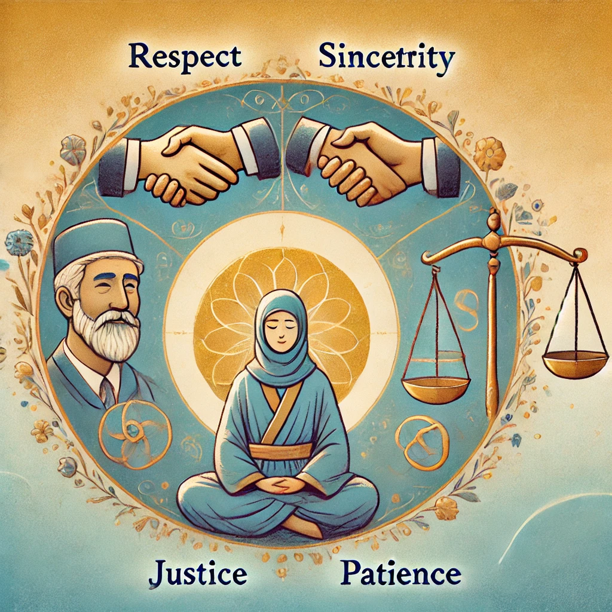
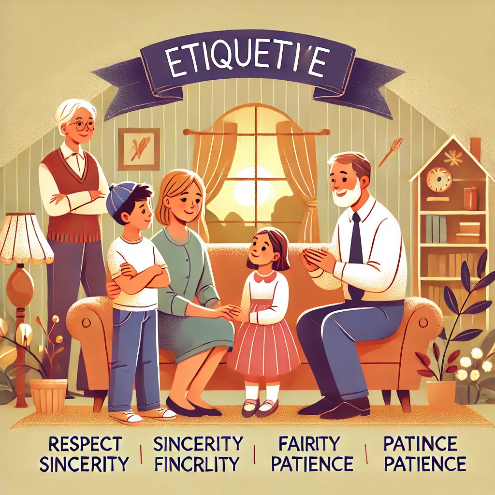
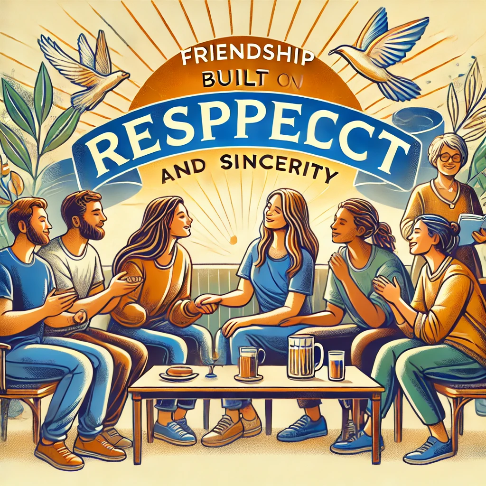
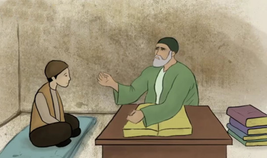
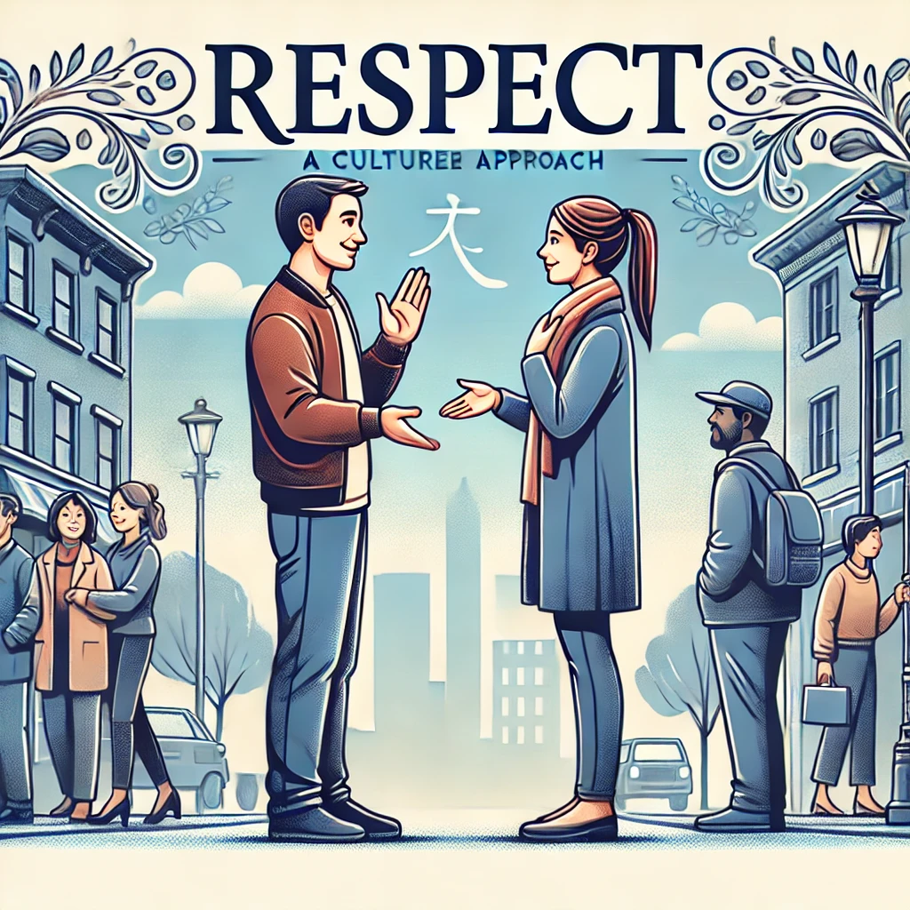
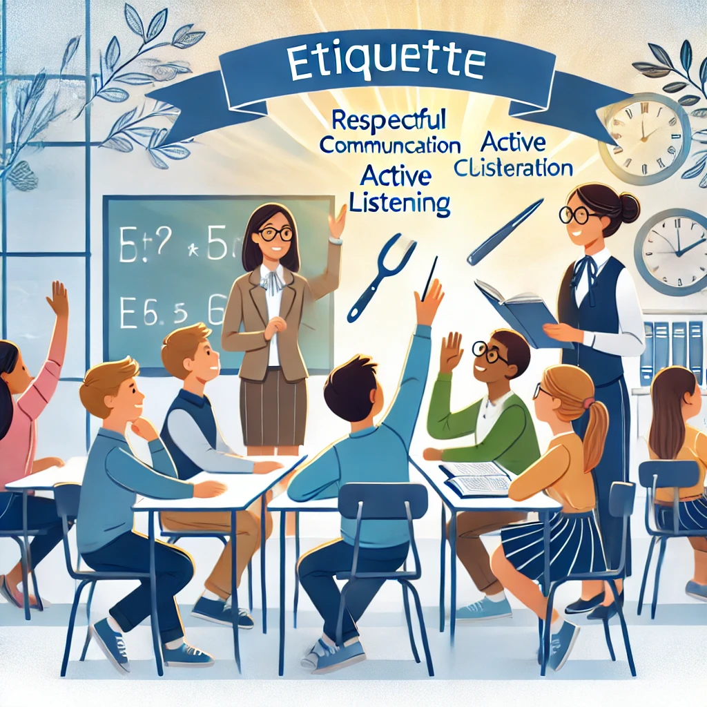
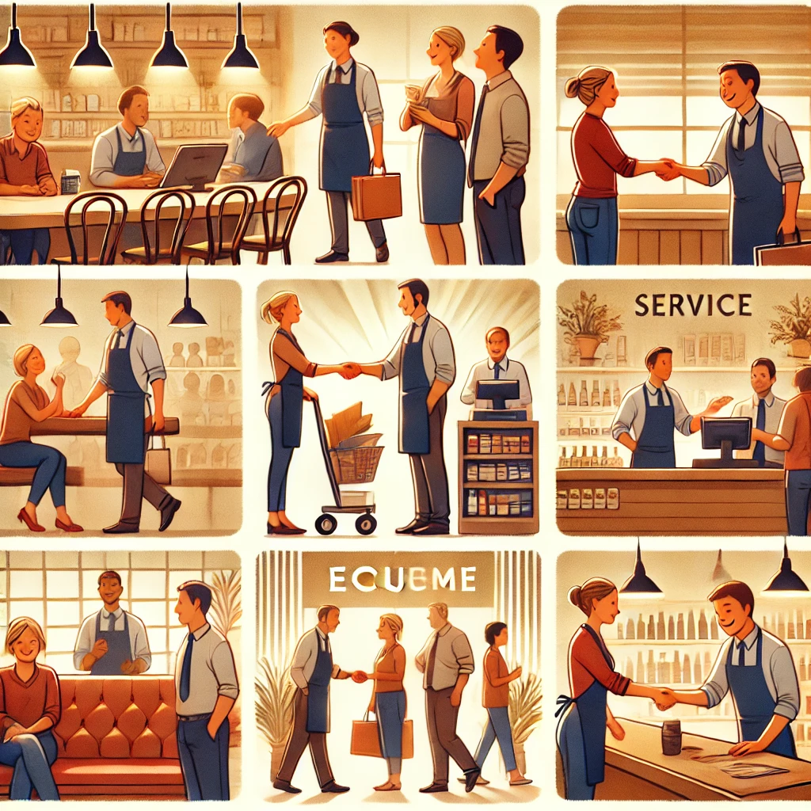
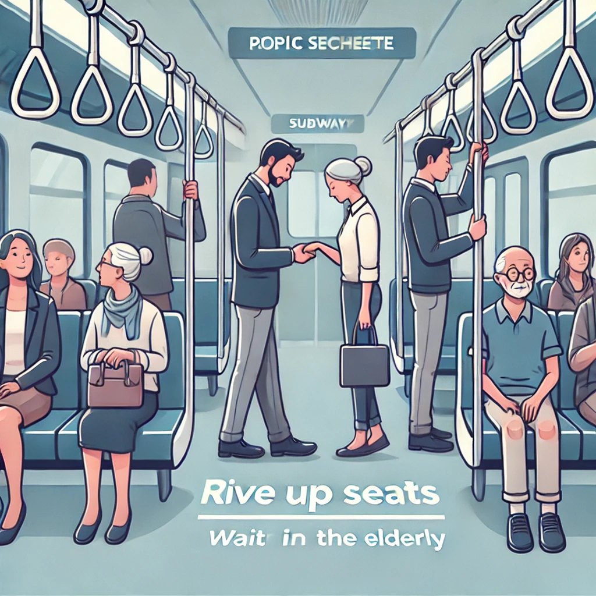
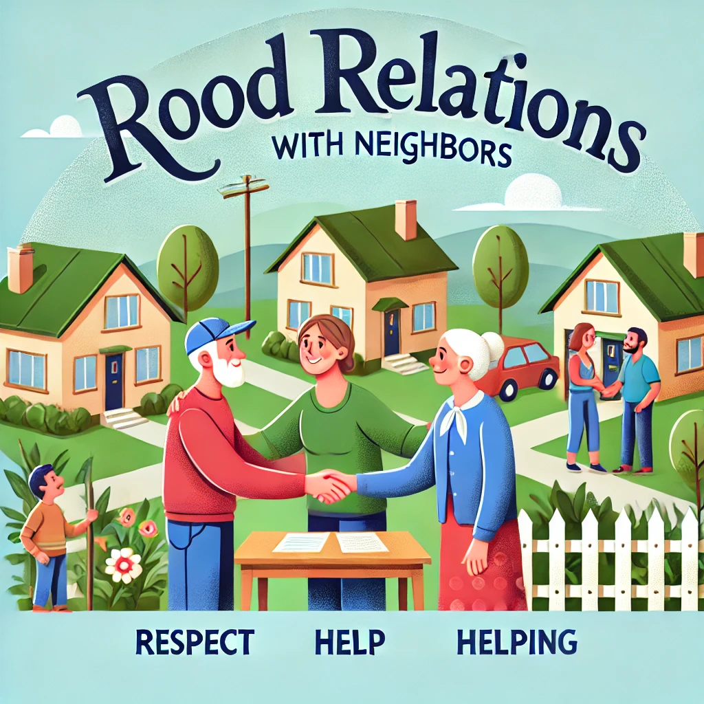
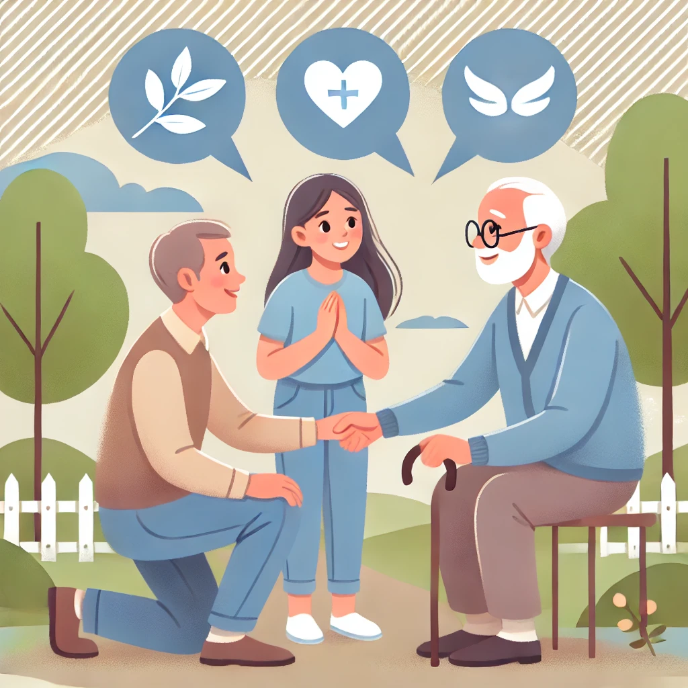

Ushbu taqdimotdan maqsad – muomala odoblarining jamiyatdagi ahamiyatini tushuntirish va odobli bo‘lishning foydalarini ochib berish.
Muomala – insonlarning bir-biri bilan aloqasi va muloqot qilish usulidir.
Hurmat, samimiylik, adolat va sabr kabi qadriyatlar muomala odobining asosiy tamoyillaridir.
Oilada odob qoidalariga rioya qilish farzandlar tarbiyasida katta ahamiyatga ega.
Kasbiy faoliyatda odob qoidalariga amal qilish muvaffaqiyatga erishishning kalitidir.
Do‘stlar o‘rtasidagi hurmat va samimiyat mustahkam aloqalarni yaratadi.
Ochiqlik va mehribonlik jamiyatdagi muomala madaniyatining muhim jihatlaridir.
Odobning ko‘plab tamoyillari diniy an'analardan kelib chiqadi.
Xatlar va elektron muloqotda odob qoidalariga rioya qilish muhim.
Hurmat va madaniyatli yondashuv notanish insonlar bilan muloqotda muhim.
Internet va ijtimoiy tarmoqlarda etikaga rioya qilish lozim.
Maktab va universitetlarda muomala odobining ahamiyati.
Do‘kon, restoran va boshqa xizmat ko‘rsatish joylarida odob qoidalari.
Jamoat transportida muomala qoidalariga amal qilish.
Qo‘shnilarga hurmat bilan munosabatda bo‘lish odoblari.
Yoshlar va keksalar bilan hurmat asosida muloqot qilish.
Muomala odoblari jamiyatning rivojlanishi va insonlar o‘rtasidagi munosabatlarning mustahkamlanishida muhim rol o‘ynaydi.